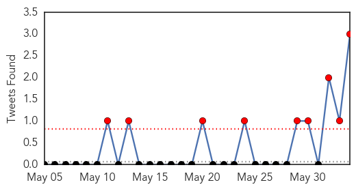
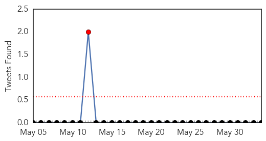

MERS
30-Day Web Trend
13 alerts, 2 warnings
30-Day Twitter Trend
6 alerts, 0 warnings

Article Locations

Article Confidences

Top Articles:
- 1.000
- South Korea shuts down primary schools as spread of MERS alarms public
- 1.000
- First deaths from Mers virus in South Korea
- 1.000
- Public Health Ministry affirms Thailand free of 2012 Corona virus patient
- 1.000
- Schools Close in Korea Amid MERS Outbreak
- 1.000
- Japan beefs up measures in bid to pre-empt arrival of deadly MERS virus
- 1.000
- Mers virus: South Korea closes hundreds of schools over fears deadly virus may spread
- 1.000
- This Is What We Know About The MERS Virus So Far
- 1.000
- Five more South Korean MERS cases lift total to 35
- 1.000
- South Korean MERS outbreak likely to spread, health officials say
- 1.000
- Science, Technology and Medicine News Updates From Asia
- 1.000
- MERS virus forces South Korean schools to close as panic spreads
- 1.000
- Vietnam health ministry urges more efforts to block MERS-CoV spread
- 1.000
- South Korean schools close to prevent spread of MERS virus, 1364 people in quarantine
- 1.000
- Public Health monitoring MERS outbreak in South Korea
- 1.000
- MERS virus threat: NIV to enhance lab capabilities
- 1.000
- People's Daily Online
- 0.999
- Two South Koreans Die Of MERS Virus
- 0.999
- South Korea president Park Geun-Hye urges calm as Mers outbreak closes schools
- 0.999
- South Korea shuts down over 200 schools as Mers infections rise in wake of two deaths
- 0.999
- South Korean MERS Outbreak
- 0.999
- The Lancet: Middle East respiratory syndrome (MERS) Seminar
- 0.999
- As Korean MERS cases grow, experts analyze patterns
- 0.999
- MERS virus kills 2 in S.Korea; infections rise to 25
- 0.999
- South Korea reports its first 2 deaths from MERS virus
- 0.999
- South Korea's MERS Outbreak Likely to Spread Says WHO
- 0.998
- Middle East respiratory syndrome coronavirus (MERS-CoV) in the Republic of Korea
- 0.998
- Transparency, teamwork key to beating deadly S.Korea MERS outbreak
- 0.998
- UPDATE 3-South Korea says everything must be done to halt MERS
- 0.998
- MERS fears escalate, five more cases reported
- 0.998
- South Korea says everything must be done to halt MERS
- 0.998
- South Korea's MERS outbreak
- 0.998
- South Korea says everything must be done to halt MERS
- 0.997
- MERS cases in South Korea ...｜Society｜WCT
- 0.997
- South Korea reports 5 more cases of MERS illness
- 0.997
- No need for mandatory Mers quarantine, WHO says, amid Hong Kong public health scare
- 0.997
- MERS: What is it, what are the symptoms and how do you catch it?
- 0.997
- Transparency, teamwork key to beating deadly South Korea MERS outbreak
- 0.996
- Singapore has measures in place in case Mers-CoV virus occurs here, says Ministry of Health, Health News & Top Stories
- 0.996
- Over 200 schools cancel classes
- 0.996
- South Korea Has First Two Mers Deaths
- 0.996
- Britannica.com
- 0.996
- South Korea Mers cases hit 30
- 0.995
- South Korea says everything must be done to halt MERS, Others news, Health News, AsiaOne YourHealth
- 0.995
- South Korea has first 2 MERS deaths
- 0.995
- In spread of MERS, a mutation is most feared-INSIDE Korea JoongAng Daily
- 0.994
- CDC doctor urges calm over MERS scare
- 0.993
- 200+ South Korean schools suspend classes over MERS outbreak
- 0.993
- 200 South Korean schools suspend classes over MERS outbreak
- 0.992
- 200 South Korean schools suspend classes over MERS outbreak
- 0.990
- Health authorities in China ...｜Society｜WCT
Showing top 50 articles...
Top Tweets:
- 0.843
- Middle East respiratory syndrome MERS is a viral respiratory disease caused by a novel coronavirus http://t.co/IB8ufMGw5J
- 0.576
- Avian Flu Diary: The Lancet: A MERS-CoV Seminar & Comment http://t.co/GKOdjltQ3c
- 0.521
- RT: South Korea announces 5 more coronavirus MERS cases, incl. 2 more health care workers -total now 35 -June 3, 2015 https…
- 0.521
- RT: South Korea announces 5 more coronavirus MERS cases, incl. 2 more health care workers -total now 35 -June 3, 2015 https…
Meningitis
30-Day Web Trend
0 alerts, 0 warnings

30-Day Twitter Trend
1 alerts, 0 warnings

Article Locations

Article Confidences

Top Articles:
Top Tweets:
-
No tweets found for Jun 03, 2015